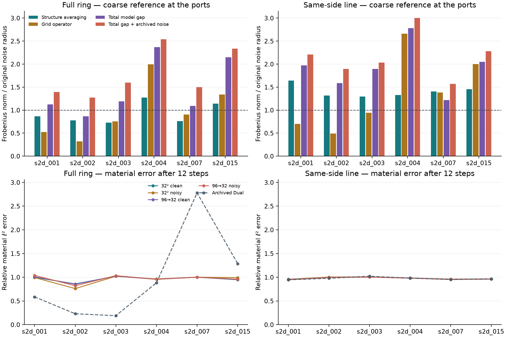
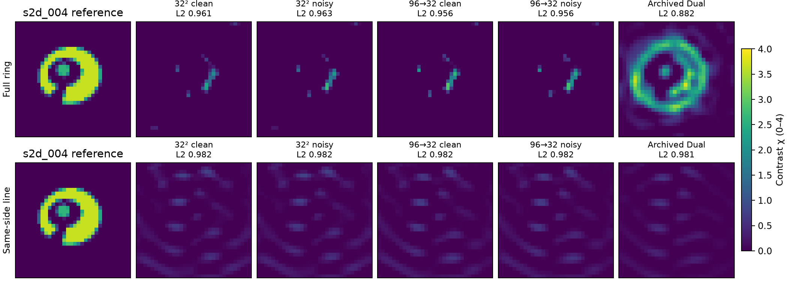

SRAP 的 96² 到 32² 模型误差有多大
在 6 个原有 SRAP 材料、两套收发布阵上，把真实材料粗化到 32² 后直接正演，12 份带噪观测都落在该预测的原噪声球之外。全环的端口差中位数为 1.55 个噪声半径，同侧线阵为 2.12 个。即使移除观测噪声，11/12 的细粗正演差仍超过一个原噪声半径。因此，使用 32² 物理模型并要求只拟合到原噪声半径时，准确恢复原粗化材料与达到数据阈值是不同目标。
固定材料重放细、粗正演
从原 srap_main24 每一原始生成家族取第一个材料，按原 family 排列选出 s2d_001, 002, 003, 004, 007, 015。每件材料使用已保存的 PW360_10x20 和 LS_LINE_SAME_10x20，以原布阵各自的观测与噪声半径配对。六个材料各计一次。阵列及四种数据条件是同材料重复。两个阵列的旧噪声方向不同，四条件的同一观测内比较共享同一方向和绝对半径。
96² 细网材料、源和接收选择、全波内部 Green、残差门槛均调用原 data2d.py / fine_solve。用原 SeedSequence([20261121023, 物体索引, 原阵列索引, 0]) 重新生成复高斯方向，再按存档绝对半径缩放，从原 Y 分离测量噪声。另用细网真值独立重算全部原全波解，并调用原 complex_noise 生成规则交叉检查。12 组重放的最大相对差为 \(5.27\times10^{-17}\)，噪声数组最大相对差为 \(2.49\times10^{-16}\)。实际材料粗化结果与原存档逐元素相同。生成和真值复核在反演阶段前完成，反演程序仅访问 public 中的算子和指定复阵列，预测保存后再做材料评分。原始重放结果和记录 · 冻结设计
为看清误差来源，令 \(m_{96}\) 是原细网材料，\(\bar m_{32}\) 是原 3×3 块均值，将均值按原样铺回每个 3×3 细网块得到 \(\widetilde m_{96}\)。同一发射、接收布局下计算
\[ \begin{aligned} e_{\mathrm{structure}}&=Y_{96}(m_{96})-Y_{96}(\widetilde m_{96}),\\ e_{\mathrm{grid}}&=Y_{96}(\widetilde m_{96})-Y_{32}(\bar m_{32}),\\ e_{\mathrm{model}}&=e_{\mathrm{structure}}+e_{\mathrm{grid}}. \end{aligned} \]
第一项只改变材料的亚像素结构且保留同一细网。第二项保留同一块常数材料，改变盘脉冲离散、内部传播及收发离散。观测相对粗化真值正演的残差恰为 \(e_{\mathrm{model}}+\eta\)，原噪声半径 \(\delta=\|\eta\|_F\)。以下全为复端口 Frobenius 范数除以原半径，各栏报六件的中位数和范围。
| 布阵 | 子像素结构项 | 网格离散项 | 总模型误差 | 加上原噪声后的端口差 |
|---|---|---|---|---|
| 全环 | 0.820 [0.729, 1.273] | 0.831 [0.320, 1.994] | 1.158 [0.865, 2.369] | 1.549 [1.271, 2.540] |
| 同侧线阵 | 1.369 [1.296, 1.643] | 1.164 [0.493, 2.663] | 1.936 [1.219, 2.784] | 2.122 [1.570, 3.000] |
误差项需要按复数场向量相加。以 s2d_007 同侧线为例，两项分别为 1.408δ 和 1.383δ，合成只有 1.219δ。12 份数据的总模型误差与旧噪声夹角余弦为 −0.144 至 +0.057。s2d_004 同侧线的固定粗化真值给出 3.00δ 的复端口差，是该样本最大值。判定限定在原 32² 离散模型及原存档噪声球，其他材料仍可能拟合端口。逐例数据和误差交叉项
相同起点的四条件物理反演
每份观测在原 32² 算子上，从空气 \(\chi=0\) 独立起步，以 [0,20] 实盒和 12 步 L-BFGS-B 最小化完整非线性端口平方误差。无材料先验，正演与伴随梯度使用逐步重分解。四条件共享观测内的目标归一化。32² noisy 在同网格干净读数上加从存档重放的同一复噪声向量。96→32 clean 只移除这份噪声，模型差仍存。96→32 noisy 就是原 Y。另只在与原研究逐元素相同的 96→32 noisy 读取存档 Dual m_30_light，用同一完整正演和材料评分重审。历史预算是 30 秒并含轻校正，不能与新诊断的 12 次接受步作同时间算法排名。
各格是六个独立材料的中位数。内部误差以 \(\bar m_{32}>0.1\max\bar m_{32}\) 的粗化真值区域定义，分母为该区真值 Frobenius 范数。背景误差分母为全图真值范数。拟合端口残差针对当条件的读数，原存档端口残差一律对 96→32 noisy 重算。前两类干净条件的原噪声半径仅作共同单位。
| 布阵 | 数据和方法 | 全图相对 L2 | 内部相对 L2 | 背景误差 | 拟合端口 / δ | 原存档端口 / δ |
|---|---|---|---|---|---|---|
| 全环 | 32² clean | 0.980 | 0.957 | 0.155 | 8.982 | 8.722 |
| 全环 | 32² noisy | 0.992 | 0.960 | 0.225 | 8.737 | 8.369 |
| 全环 | 96→32 clean | 0.979 | 0.953 | 0.190 | 8.503 | 8.544 |
| 全环 | 96→32 noisy | 0.980 | 0.952 | 0.222 | 8.495 | 8.495 |
| 全环 | 原观测 Dual 30 s light | 0.734 | 0.548 | 0.486 | 2.320 | 2.320 |
| 同侧线 | 32² clean | 0.972 | 0.951 | 0.215 | 1.322 | 2.481 |
| 同侧线 | 32² noisy | 0.972 | 0.951 | 0.211 | 1.627 | 2.465 |
| 同侧线 | 96→32 clean | 0.972 | 0.947 | 0.217 | 1.242 | 1.643 |
| 同侧线 | 96→32 noisy | 0.972 | 0.947 | 0.213 | 1.569 | 1.569 |
| 同侧线 | 原观测 Dual 30 s light | 0.972 | 0.955 | 0.152 | 2.868 | 2.868 |
所有 48 臂触及 12 步上限。全环四条件多数留下接近零起点的材料，包括可精确拟合的同网格干净条件。线阵的端口残差较小，但四条件内部误差均在 0.95 左右。配对跨网格相对同网格的全图误差中位变化，全环干净/带噪为 +0.0024/+0.0073，线阵为 −0.0033/−0.0051，处于该短拟合的失败阶段。这组反演支持固定真值端口误差及拟合可误导的判断，尚不足以量化收敛后模型差对恢复质量的平均影响。
历史 Dual 全环端点更接近原端口，前三个物体的材料误差也明显降低。反例 s2d_007 全环的端口从本轮独立拟合的 10.03δ 降至历史 Dual 的 3.76δ，而材料相对 L2 升至 2.78。最大模型差的 s2d_004 在全环 Dual 图里重现部分环轮廓，内部对比和背景仍有较大误差。同侧线的低端口差及接近 1 的内部误差同时出现。完整正演和逐例材料评分


复现与成本
从 Inv_SLAM 根执行。prepare 写具有原始算子的四类输入和独立的离线材料目录。solve 只用 public 和配置，保存预测及每步回执。score 在 48 个预测存在后读取材料并审计历史对照。
Gaussian/.venv_nn/bin/python -B research/hc_cie_r2/src/model_gap.py all
Gaussian/.venv_nn/bin/python -B research/hc_cie_r2/src/model_gap_figures.py
单线程复双精度运行。细网原材料及铺回材料共 372 个原全波 RHS，粗网真值及输入准备另有 120 个 RHS。准备墙钟 13.10 秒、CPU 12.67 秒。48 臂的 692 次目标与梯度，加各臂终点独立正演，共 7,400 个正演 RHS 与 6,920 个伴随 RHS，逐臂墙钟和 55.90 秒、CPU 52.50 秒。原 Dual 可比读数上的再审计为 120 个 RHS、墙钟和 0.71 秒，历史产生费用属于原研究。全部输入、原物理预测、材料分数及每臂迭代过程保留。迭代及成本回执